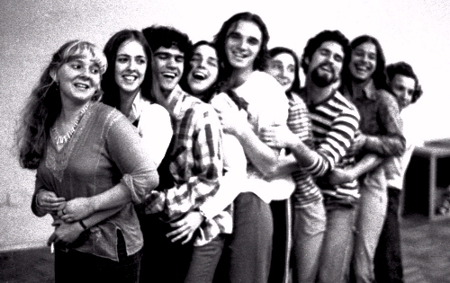

Giba Assis Brasil


Segundo a Zero Hora de hoje, as principais notícias do dia 8 de outubro de 1980 foram: a tomada de Abadan, no que parecia ser um momento decisivo da guerra entre Irã e Iraque; a chegada do Presidente João Batista Figueiredo ao Chile, com a posse provisória do vice Aureliano Chaves; o tratamento psiquiátrico da atriz Dorinha Duval, então suspeita de ter matado seu marido; e as dificuldades de renovação de contrato do meia Jair (o "príncipe Jajá") com o Inter.
Mas, para quem foi à Sala Alvaro Moreyra, no Centro Municipal de Cultura, naquela noite, exatamente 30 anos atrás, a grande notícia foi a estreia do espetáculo "School's out", texto de Pedro Santos com direção coletiva e interpretação do Grupo Vende-se Sonhos.
O grupo era uma dissidência do Grêmio Dramático Açores, que Luciano Alabarse havia criado (*) para fazer teatro experimental dentro do Teatro de Arena, então administrado por Jairo de Andrade e Marlise Saueressig. Em menos de dois anos de atuação (*), Luciano e o Açores já haviam montado "O Evangelho segundo Zebedeu", uma dramatização da guerra de Canudos pelo autor paulista César Vieira; e "A Lata de lixo da História", recriação de Roberto Schwartz a partir do clássico conto "O Alienista", de Machado de Assis. Nos dois casos, os textos originais haviam sido retrabalhados para a realidade brasileira e portoalegrense do final dos anos 1970, com improvisações e um uso do humor próximo ao deboche, com um tom entre o carnaval e a música pop que não seria exagero, na época, chamar de neotropicalista.
Mas, depois que o grupo carioca "Asdrúbal trouxe o trombone" esteve em Porto Alegre, apresentando seu seminal "Trate-me leão" e orientando aqui uma oficina livre de interpretação, uma parte do Grupo Açores, uma gurizada com vinte e poucos anos e muito teatro pela frente, começou a achar que só fazer teatro experimental não bastava. Era preciso praticar a criação coletiva desde o texto, era preciso levar pro palco a sua forma de convivência, ou talvez fosse preciso inventar uma forma de convivência que pudesse ser levada pro palco, sei lá, eles também não sabiam. Era preciso falar sobre o que significava ter vinte e poucos anos em Porto Alegre naquele momento.
Foi aí que o Pedro Santos, então entre os 20 e os 21, escreveu um texto misturando um monte de assuntos que interessavam a esse pessoal: escola, primeiros amores, descoberta do sexo, vestibular, relacionamento com os pais, responsabilidades, pensar no futuro, viver o presente, sexo, superar o passado, liberdade, ditadura, serviço militar, drogas, sexo, desilusões amorosas, rock'n'roll, amizades, ética, sexo, universidade, sexo, carreira, sexo. Coisa de adolescente querendo se tornar adulto sem ter deixado inteiramente de ser criança. Coisa de gente grande.
E em volta do Pedro o grupo foi se formando: em ordem alfabética, Angel Palomero, Cleide Fayad, Márcia do Canto, Marco Antônio Sorio, Osvaldo Perrenoud, Rosa Luporini, Soraia Simaan, Xala Felippi. Outros entrariam na roda depois, nos espetáculos seguintes, "Trenaflor" e "Das duas, uma": Martinha Biavaschi, Deborah Lacerda, Marcos Breda, Marcel Dumont, Paulo Mello, Ricardo Cordeiro, Augusto Licks, Wander WIldner, Werner Schünemann... Como o Bebeto Alves dizia, bem naquele tempo: um bando e muitos outros.
A princípio era o "Grêmio Dramático A Cores", uma brincadeira colorida com o grupo original e com o mestre Luciano Alabarse. Mas eles queriam sonhar, e dividir os seus sonhos com todo mundo, e se possível viver disso. Daí, "Vende-se sonhos", com algumas variações esdrúxulas pra driblar a patrulha de uns gramáticos da época: "Vem de sê sonhos" ou "Vendê-se sonhos". Tanto fazia.
Nei Lisboa ainda não tinha gravado, mas já cantava nos palcos da cidade, sempre fazendo questão de dizer que vinha "lá do Bom fim". A turma do Nelson Nadotti, da qual eu nem sabia que podia fazer parte, já pensava em transformar esse momento em filme super-8, antes que acabasse a década, ou o mundo, o que viesse antes. O Juarez Fonseca registrava tudo, antenado como sempre. A Mary Mezzari, depois o Mauro Borba, mostravam no rádio o que tava acontecendo. O pessoal da TVE ainda ensaiava alguma confusão, alguma quizumba, isso só pra começo de conversa. O Boina lamentava que nunca ia ter chances no jazz "porque o meu som é brasileiro". O Saracura, como todo mundo, tava no parquinho, "cheio de problemas e no entanto trilili". Faltava alguma coisa. Por sorte, o Nelson Coelho de Castro e a Dedé RIbeiro já tinham alertado que "quando a gente é pequeno o tempo custa pra passar".
E então a peça ficou pronta e tinha que estrear. Ou tinha que estrear, e por isso ficou pronta. School's out. O título falava sobre o fim de alguma coisa. As aulas acabaram, como na música do Alice Cooper. Pro verão, ou pra sempre. E agora, o que vem daqui pra frente? Será que vai ter público?

Soraia Simaan, Cleide Fayad, Pedro Santos, Rosa Luporini, Osvaldo Perrenoud, Xala Felippi, Marco Antônio Sorio, Márcia do Canto e Angel Palomero: 30 anos de "School's out". A foto é do Carlos Gerbase.
(*) "que Luciano Alabarse havia criado" e "em menos de dois anos de atuação": ver correções no comentário da Mirna Spritzer, abaixo.

{kind=link}
Muito legal Giba - olha não podemos esquecer da Jaqueline Vallandro que...( há muita coisa legal pra falar sobre ela)...foi uma garota incrível, mãe da Consuelo e uma das fundadoras do grupo. Gd abraço.
Sensacional, Giba, sensacional...
Giba, em teu artigo no blog há duas imprecisões. 1. "O grupo era uma dissidência do Grêmio Dramático Açores, que Luciano Alabarse havia criado para fazer teatro experimental dentro do Teatro de Arena, então administrado por Jairo de Andrade e Marlise Saueressig". O Grêmio Dramático Açores (do qual participei desde o primeiro teste para admissão) foi criado por Jairo e Marlise. Os dois desejosos de ter no Arena um Grupo Amador que pudesse circular com espetáculos em repertório, chamaram os recém formados diretores pelo DAD, Luciano Alabarse, Carlos Cunha Filho, João Pedro Gil e Augusto Hernandez para fazerem este trabalho. 2. "Em menos de dois anos de atuação..." O Açores foi criado em 1977, portanto, 3 anos antes do School's Out. Beijo, Mirna
Muito obrigado, Mirna. É o que dá querer contar história sem pesquisa. Foi a pressa, eu não queria perder a data.
E a gente fazia isso com tanta paixão com tanta crença. Acreditávamos que podíamos mudar o mundo e não é que mudávamos mesmo? E como dizia o velho Raul "Sonho que se sonha só e só um sonho que se sonha só, mas sonho que se sonha junto é realidade." Valeu Giba. bjo
Ou como dizia a senhora da padaria aqui da esquina: "O sonho acabou, mas ainda tem mil folhas."
Muito bom Giba! Acabo de conectar algumas histórias!! Que coisa...estudamos Shakespeare e não sabemos a nossa história!!!!
Valeu, Alvaro. Mas, por favor, que ninguém deixe de estudar Shakespeare :-)
Maravilha, no distante ano de 1980 eu tinha apenas 12 anos, mas ficava antenado nos programas dos mais velhos que nunca me levavam pra sair prá Porto Alegre assistir uma peça no teatro de Arena ou na Casa Municipal de Cultura. Ainda não existia o Trensurb e o pessoal ia de Real Rodovias mesmo, lembro de assistir no teatro do La Salle de Canoas uma montagem do Morte e Vida Severina, nunca mais esqueci daquele lúgubre verso que fala: "Esta é a parte que te cabe neste Latifundio... esta é a vida que queria ver dividida"... e depois, uns anos mais tarde, assisti "aurora da minha vida" neste mesmo teatro. Mas a primeira vez que vim a Porto Alegre sozinho, à noite, foi para assistir " A Bossa da Juventude" com o grupo "Balaio de gatos" Patsi Cecato, Renato Campão, e mais dois que não lembro acho que em 84/85, já tinha trem pra voltar pra casa. grande abraço Giba
Que delícia ler esse relato. Minha história é bem parecida com a do Fabinho, só que sem o trensurb. O quarto do meu irmão vivia cheio de filipetas intrigantes em preto e branco. Por ali passaram o Vende-se sonhos, o espaço N.O., os unicultura e tantas outra coisas. O futuro devia ser incrível.
Grande Fabinho! Acho que quem fez a "Bossa da juventude", além do Renato e da Patsy, foram a Lila Vieira e o Jaime Ratinecas.
Hiii, minha memória me traiu, o verso é: Esta é a terra que queria ver dividida...